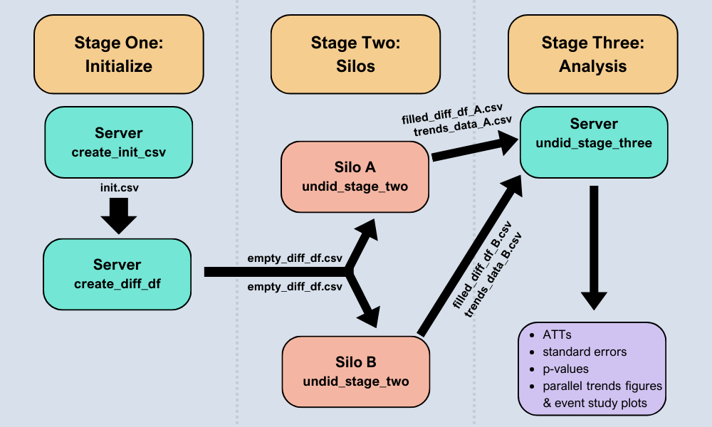
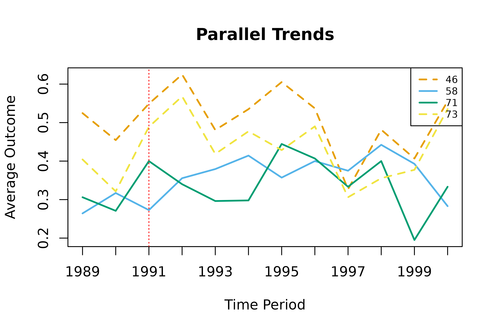
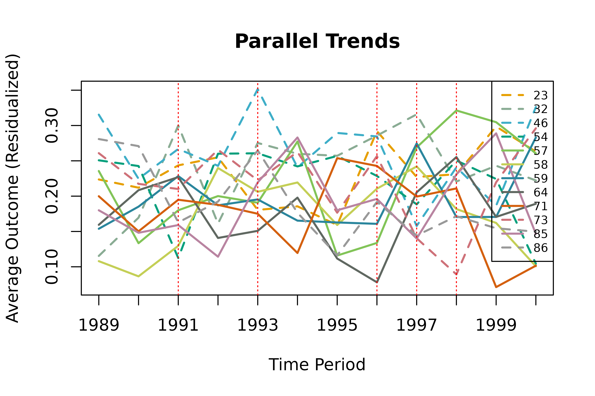
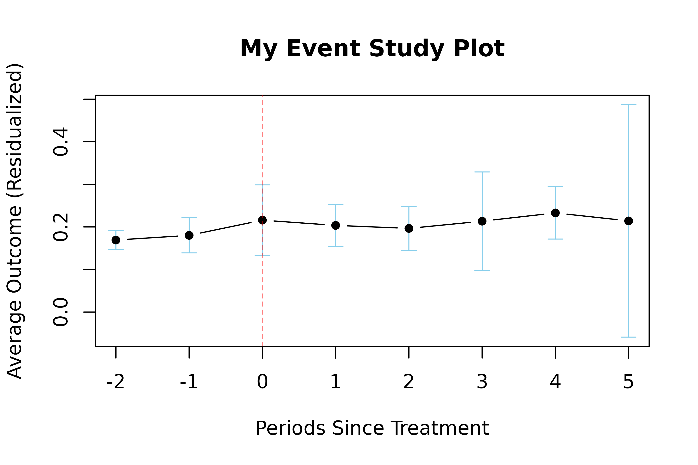

Introduction
The undidR package implements difference-in-differences with unpoolable data (UNDID); a framework that enables the estimation of the average treatment effect on the treated (ATT) when the data from different silos is not poolable. UNDID allows for staggered or common adoption and the inclusion of covariates.
In addition, undidR also implements the randomization inference (RI) procedure for difference-in-differences described in MacKinnon and Webb (2020) to calculate RI p-values.
Below is an overview of the undidR framework:

Schematic of the UNDID framework.
The following sections detail some examples of implementing undidR at each of its three stages for both staggered and common adoption scenarios.
1. Stage One: Initialize
When calling create_init_csv() silo names must be
specified along with their corresponding treatment times. Consequently,
the silos_names vector must be the same length as the
treatment_times vector.
All dates must be entered in the same date format. To see valid date
formats within the undidR package call
undid_date_formats().
Covariates may be specified when calling either
create_init_csv() or when calling
create_diff_df() via the covariates
parameter.
The choice of weights is also set during the initialization stage.
The options of weights are one of: "none",
"diff", "att", or "both". Each of
these options describes levels at which the weights are applied. The
"diff" option uses weights based off of the number of
observations (treated and untreated) associated with each contrast
(difference) at each silo. The weights are used when computing the
subaggregate ATTs from the differences. The counts of these observations
are recorded during stage two and kept in the n column of
the diff_df CSV files. Likewise, the number of observations
after treatment time are stored in the n_t column. The
“att” weighting option uses the number of post-treatment
observations from treated silos associated with each subaggregate ATT as
weights when computing the aggregate ATT from the subaggregate ATTs.
1.1 Common Treatment Time (Stage One)
# First, an initializing CSV is created detailing the silos
# and their treatment times. Control silos (here, 73 and 46)
# should be labelled with "control".
init <- create_init_csv(silo_names = c("73", "46", "71", "58"),
start_times = "1989",
end_times = "2000",
treatment_times = c("control", "control",
"1991", "1991"))
#> init.csv saved to: /tmp/Rtmp0U80UP/init.csv
init
#> silo_name start_time end_time treatment_time
#> 1 73 1989 2000 control
#> 2 46 1989 2000 control
#> 3 71 1989 2000 1991
#> 4 58 1989 2000 1991
# After the initializing CSV file is created, `create_diff_df()`
# can be called. This creates the empty differences data frame which
# will then be filled out at each individual silo for its respective portion.
init_filepath <- normalizePath(file.path(tempdir(), "init.csv"),
winslash = "/", mustWork = FALSE)
empty_diff_df <- create_diff_df(init_filepath, date_format = "yyyy",
freq = "yearly", weights = "both")
#> empty_diff_df.csv saved to: /tmp/Rtmp0U80UP/empty_diff_df.csv
empty_diff_df
#> silo_name treat common_treatment_time start_time end_time weights
#> 1 73 0 1991 1989 2000 both
#> 2 46 0 1991 1989 2000 both
#> 3 71 1 1991 1989 2000 both
#> 4 58 1 1991 1989 2000 both
#> diff_estimate diff_var diff_estimate_covariates diff_var_covariates
#> 1 NA NA NA NA
#> 2 NA NA NA NA
#> 3 NA NA NA NA
#> 4 NA NA NA NA
#> covariates date_format freq n n_t anonymize_size
#> 1 none yyyy 1 year NA NA NA
#> 2 none yyyy 1 year NA NA NA
#> 3 none yyyy 1 year NA NA NA
#> 4 none yyyy 1 year NA NA NA1.2 Staggered Adoption (Stage One)
# The initializing CSV for staggered adoption is created in the same way.
# When `create_diff_df()` is run, it will automatically detect whether or not
# the initial setup is for a common adoption or staggered adoption scenario.
init <- create_init_csv(silo_names = c("73", "46", "54", "23", "86", "32",
"71", "58", "64", "59", "85", "57"),
start_times = "1989",
end_times = "2000",
treatment_times = c(rep("control", 6),
"1991", "1993", "1996", "1997",
"1997", "1998"))
#> init.csv saved to: /tmp/Rtmp0U80UP/init.csv
init
#> silo_name start_time end_time treatment_time
#> 1 73 1989 2000 control
#> 2 46 1989 2000 control
#> 3 54 1989 2000 control
#> 4 23 1989 2000 control
#> 5 86 1989 2000 control
#> 6 32 1989 2000 control
#> 7 71 1989 2000 1991
#> 8 58 1989 2000 1993
#> 9 64 1989 2000 1996
#> 10 59 1989 2000 1997
#> 11 85 1989 2000 1997
#> 12 57 1989 2000 1998
# Creating the empty differences data frame and associated CSV file is
# the same for the case of staggered adoption as it is for common adoption.
init_filepath <- normalizePath(file.path(tempdir(), "init.csv"),
winslash = "/", mustWork = FALSE)
empty_diff_df <- create_diff_df(init_filepath, date_format = "yyyy",
freq = "yearly", weights = "both",
covariates = c("asian", "black", "male"))
#> empty_diff_df.csv saved to: /tmp/Rtmp0U80UP/empty_diff_df.csv
head(empty_diff_df, 4)
#> silo_name gvar treat diff_times gt RI start_time end_time weights
#> 1 73 1991 0 1991;1990 1991;1991 0 1989 2000 both
#> 2 73 1991 0 1992;1990 1991;1992 0 1989 2000 both
#> 3 73 1991 0 1993;1990 1991;1993 0 1989 2000 both
#> 4 73 1991 0 1994;1990 1991;1994 0 1989 2000 both
#> diff_estimate diff_var diff_estimate_covariates diff_var_covariates
#> 1 NA NA NA NA
#> 2 NA NA NA NA
#> 3 NA NA NA NA
#> 4 NA NA NA NA
#> covariates date_format freq n n_t anonymize_size
#> 1 asian;black;male yyyy 1 year NA NA NA
#> 2 asian;black;male yyyy 1 year NA NA NA
#> 3 asian;black;male yyyy 1 year NA NA NA
#> 4 asian;black;male yyyy 1 year NA NA NA2. Stage Two: Silos
The second stage function, undid_stage_two(), creates
two CSV files. The first is the filled portion of the differences data
frame for the respective silo. The second captures the mean (and the
mean residualized by the specified covariates) of the outcome variable
from the start_time to the end_time in
intervals of freq.
These are returned from undid_stage_two() as a list of
two data frames which can be accessed by the suffixes of
$diff_df and $trends_data, respectively.
In order to accommodate silos that might have very stringent data
sharing policies, there is an option of anonymize_weights
(defaults to FALSE) during the second stage. If selected,
it will round the counts in the n column (in the trends
data and diff matrix) as well as the n_t column to the
closest value of anonymize_size (which defaults to 5).
The undid_stage_two() looks for covariates based on how
they are spelled in the empty_diff_df.csv file. This means
that silos may have to rename their covariate columns.
2.1 Common Treatment Time (Stage Two)
# When calling `undid_stage_two()`, ensure that the `time_column` of
# the `silo_df` contains only character values, i.e. date strings.
silo_data <- silo71
silo_data$year <- as.character(silo_data$year)
empty_diff_filepath <- system.file("extdata/common", "empty_diff_df.csv",
package = "undidR")
stage2 <- undid_stage_two(empty_diff_filepath, silo_name = "71",
silo_df = silo_data, time_column = "year",
outcome_column = "coll", silo_date_format = "yyyy")
#> filled_diff_df_71.csv saved to: /tmp/Rtmp0U80UP/filled_diff_df_71.csv
#> trends_data_71.csv saved to: /tmp/Rtmp0U80UP/trends_data_71.csv
head(stage2$diff_df, 4)
#> silo_name treat common_treatment_time start_time end_time weights
#> 1 71 1 1991 1989 2000 both
#> diff_estimate diff_var diff_estimate_covariates diff_var_covariates
#> 1 0.05879783 0.002597221 0.06696561 0.002532783
#> covariates date_format freq n n_t anonymize_size
#> 1 asian;black;male yyyy 1 year 569 472 NA
head(stage2$trends_data, 4)
#> silo_name treatment_time time mean_outcome mean_outcome_residualized
#> 1 71 1991 1989 0.3061224 0.1998800
#> 2 71 1991 1990 0.2708333 0.1502040
#> 3 71 1991 1991 0.4000000 0.1949109
#> 4 71 1991 1992 0.3400000 0.1876636
#> covariates date_format freq n
#> 1 asian;black;male yyyy 1 year 49
#> 2 asian;black;male yyyy 1 year 48
#> 3 asian;black;male yyyy 1 year 45
#> 4 asian;black;male yyyy 1 year 502.2 Staggered Adoption (Stage Two)
# Here we can see that calling `undid_stage_two()` for staggered adoption
# is no different than calling `undid_stage_two()` for common adoption.
silo_data <- silo71
silo_data$year <- as.character(silo_data$year)
empty_diff_filepath <- system.file("extdata/staggered", "empty_diff_df.csv",
package = "undidR")
stage2 <- undid_stage_two(empty_diff_filepath, silo_name = "71",
silo_df = silo_data, time_column = "year",
outcome_column = "coll", silo_date_format = "yyyy")
#> filled_diff_df_71.csv saved to: /tmp/Rtmp0U80UP/filled_diff_df_71.csv
#> trends_data_71.csv saved to: /tmp/Rtmp0U80UP/trends_data_71.csv
head(stage2$diff_df, 4)
#> silo_name gvar treat diff_times gt RI start_time end_time weights
#> 1 71 1991 1 1991;1990 1991;1991 0 1989 2000 both
#> 2 71 1991 1 1992;1990 1991;1992 0 1989 2000 both
#> 3 71 1991 1 1993;1990 1991;1993 0 1989 2000 both
#> 4 71 1991 1 1994;1990 1991;1994 0 1989 2000 both
#> diff_estimate diff_var diff_estimate_covariates diff_var_covariates
#> 1 0.12916667 0.009447555 0.116348472 0.009397021
#> 2 0.06916667 0.008602222 0.069515594 0.008272557
#> 3 0.02546296 0.007975422 0.005133291 0.007767637
#> 4 0.02703901 0.008564103 0.029958108 0.008338060
#> covariates date_format freq n n_t anonymize_size
#> 1 asian;black;male yyyy 1 year 93 45 NA
#> 2 asian;black;male yyyy 1 year 98 50 NA
#> 3 asian;black;male yyyy 1 year 102 54 NA
#> 4 asian;black;male yyyy 1 year 95 47 NA
head(stage2$trends_data, 4)
#> silo_name treatment_time time mean_outcome mean_outcome_residualized
#> 1 71 1991 1989 0.3061224 0.1998800
#> 2 71 1991 1990 0.2708333 0.1502040
#> 3 71 1991 1991 0.4000000 0.1949109
#> 4 71 1991 1992 0.3400000 0.1876636
#> covariates date_format freq n
#> 1 asian;black;male yyyy 1 year 49
#> 2 asian;black;male yyyy 1 year 48
#> 3 asian;black;male yyyy 1 year 45
#> 4 asian;black;male yyyy 1 year 503. Stage Three: Analysis
The third stage of undidR produces the aggregate ATT estimate, its standard errors, and its p-values, as well as group level ATT estimates for staggered adoption.
In the case of staggered adoption these group level ATTs can either
be grouped by silo (agg = "silo"), by treatment time
(agg = "g"), by treatment time for every time period after
treatment has started (agg = "gt"), or, the
"gt" aggregation can further be separated by silo with
agg = "sgt". There is also an option to aggregate by time
since treatment with agg = "time".
undid_stage_three() returns an object with the class
UnDiDObj which has four S3 methods: summary(),
print(), coef(), and plot().
summary() and plot() are likely the most
useful.
With the plot() method for UnDiDObj, you
can specify the event parameter as
event = TRUE in order to produce an event study plot. You
can specify the confidence intervals on the event study plot with
ci (defaults to 0.95) and the window for which you want to
observe the event study plot can be restricted by setting
event_window = c(start, end) where start and
end are numeric values describing the periods before and
after treatment time. The plot() method for also inherits
standard parameters normally used in plot().
Further, you can access the diff matrix itself that is used to
compute subaggregate ATTs and the aggregate ATT with
UnDiDObj$diff. Likewise, you can access the trends data
with UnDiDObj$trends.
3.1 Common Treatment Time (Stage Three)
# `undid_stage_three()`, given a `dir_path`, will search that folder
# for all CSV files that begin with "filled_diff_df_" and stitch
# them together in order to compute the group level ATTs, aggregate ATT
# and associated standard errors and p-values.
dir_path <- system.file("extdata/common", package = "undidR")
results <- undid_stage_three(dir_path, covariates = FALSE, nperm = 399)
#> Warning in undid_stage_three(dir_path, covariates = FALSE, nperm = 399): If 'agg = none' then 'weights' can only be either 'none' or 'diff'.
#> Setting weights to 'diff'.
#> Warning in .compute_ri_pval(results, diff_df, nperm, agg, weights, max_attempts, : 'nperm' was set to 399 but only 5 exist.
#> Setting nperm = 5
#> Warning in .compute_ri_pval(results, diff_df, nperm, agg, weights,
#> max_attempts, : 'nperm' is less than 399.
summary(results)
#>
#> Weighting: diff
#> Aggregation: none
#> Not-yet-treated: FALSE
#> Covariates: none
#> HCCME: hc3
#> Period Length: 1 year
#> First Period: 1989
#> Last Period: 2000
#> Permutations: 5
#>
#> Aggregate Results:
#> ATT Std. Error p-value RI p-value Jackknife SE Jackknife p-value
#> 0.02381393 0.05027192 0.6823859 0.6 0.04353676 0.622451
#>
#> No sub-aggregate estimates available.
plot(results)
3.2 Staggered Adoption (Stage Three)
# When calling `undid_stage_three()` for staggered adoption it is
# important to specify the aggregation method, `agg`.
dir_path <- system.file("extdata/staggered", package = "undidR")
results <- undid_stage_three(dir_path, agg = "silo", covariates = TRUE,
nperm = 399)
#> Completed 100 of 399 permutations
#> Completed 200 of 399 permutations
#> Completed 300 of 399 permutations
head(results$diff, 4)
#> silo_name gvar treat diff_times gt RI start_time end_time weights
#> 1 23 7670 0 1991;1990 1991;1991 0 6940 10957 both
#> 31 32 7670 0 1991;1990 1991;1991 0 6940 10957 both
#> 61 46 7670 0 1991;1990 1991;1991 0 6940 10957 both
#> 91 54 7670 0 1991;1990 1991;1991 0 6940 10957 both
#> diff_estimate diff_var diff_estimate_covariates diff_var_covariates
#> 1 0.04995599 0.003025270 0.04003924 0.003049531
#> 31 0.15384615 0.010602526 0.10568820 0.010788858
#> 61 0.09447415 0.009362733 0.09122789 0.008956869
#> 91 -0.13125000 0.009224325 -0.12815145 0.009183679
#> covariates date_format freq n n_t anonymize_size diff_times_post
#> 1 asian;black;male yyyy 1 year 334 142 NA 7670
#> 31 asian;black;male yyyy 1 year 92 40 NA 7670
#> 61 asian;black;male yyyy 1 year 106 51 NA 7670
#> 91 asian;black;male yyyy 1 year 109 45 NA 7670
#> diff_times_pre t y y_var
#> 1 7305 7670 0.04003924 0.003049531
#> 31 7305 7670 0.10568820 0.010788858
#> 61 7305 7670 0.09122789 0.008956869
#> 91 7305 7670 -0.12815145 0.009183679
head(results$trends, 4)
#> silo_name treatment_time time mean_outcome mean_outcome_residualized
#> 1 23 control 1989-01-01 0.3963415 0.2236357
#> 2 23 control 1990-01-01 0.4218750 0.2119609
#> 3 23 control 1991-01-01 0.4718310 0.2435888
#> 4 23 control 1992-01-01 0.4625850 0.2549387
#> covariates date_format freq n time_label y period
#> 1 asian;black;male yyyy 1 year 164 1989 0.2236357 1
#> 2 asian;black;male yyyy 1 year 192 1990 0.2119609 2
#> 3 asian;black;male yyyy 1 year 142 1991 0.2435888 3
#> 4 asian;black;male yyyy 1 year 147 1992 0.2549387 4
#> time_since_treatment
#> 1 NA
#> 2 NA
#> 3 NA
#> 4 NA
summary(results)
#>
#> Weighting: both
#> Aggregation: silo
#> Not-yet-treated: FALSE
#> Covariates: asian, black, male
#> HCCME: hc3
#> Period Length: 1 year
#> First Period: 1989
#> Last Period: 2000
#> Permutations: 399
#>
#> Aggregate Results:
#> ATT Std. Error p-value RI p-value Jackknife SE Jackknife p-value
#> 0.0732032 0.03338214 0.07980594 0.03007519 0.0366304 0.07099495
#>
#> Subaggregate Results:
#> Silo ATT SE p-value RI p-val JK SE JK p-val Weight
#> --------------------------------------------------------------------------------------------------------------
#> 71 0.0434 0.0275 0.1192 0.3083 NA NA 0.2428
#> 58 0.0478 0.0260 0.0710 0.4486 NA NA 0.2305
#> 64 0.0451 0.0407 0.2757 0.5965 NA NA 0.0910
#> 59 0.1454 0.0412 0.0016 0.0602 NA NA 0.2922
#> 85 0.0964 0.0401 0.0238 0.3258 NA NA 0.0941
#> 57 -0.0812 0.0888 0.3718 0.2757 NA NA 0.0494
plot(results, main = "My Parallel Trends Plot")

References
You can access citations by calling
citation("undidR").
citation("undidR")
#> To cite the UN-DID paper, please use:
#>
#> Karim S, Webb M, Austin N, Strumpf E (2024).
#> "Difference-in-Differences with Unpoolable Data." _arXiv preprint
#> arXiv:2403.15910_. <https://arxiv.org/abs/2403.15910>.
#>
#> If you are using randomization inference p-values, please also cite:
#>
#> MacKinnon J, Webb M (2020). "Randomization inference for
#> difference-in-differences with few treated clusters." _Journal of
#> Econometrics_, *218*(2), 435-450.
#> <https://doi.org/10.1016/j.jeconom.2020.04.024>.
#>
#> To cite the undidR software package:
#>
#> Jamieson E (2025). "undidR: Difference-in-Differences with Unpoolable
#> Data." R package version 3.0.2,
#> <https://doi.org/10.32614/CRAN.package.undidR>.
#>
#> To see these entries in BibTeX format, use 'print(<citation>,
#> bibtex=TRUE)', 'toBibtex(.)', or set
#> 'options(citation.bibtex.max=999)'.You can also call
print(citation("undidR"), bibtex = TRUE).
print(citation("undidR"), bibtex = TRUE)
#> To cite the UN-DID paper, please use:
#>
#> Karim S, Webb M, Austin N, Strumpf E (2024).
#> "Difference-in-Differences with Unpoolable Data." _arXiv preprint
#> arXiv:2403.15910_. <https://arxiv.org/abs/2403.15910>.
#>
#> A BibTeX entry for LaTeX users is
#>
#> @Article{,
#> title = {Difference-in-Differences with Unpoolable Data},
#> author = {Sunny Karim and Matthew D. Webb and Nichole Austin and Erin Strumpf},
#> year = {2024},
#> journal = {arXiv preprint arXiv:2403.15910},
#> url = {https://arxiv.org/abs/2403.15910},
#> }
#>
#> If you are using randomization inference p-values, please also cite:
#>
#> MacKinnon J, Webb M (2020). "Randomization inference for
#> difference-in-differences with few treated clusters." _Journal of
#> Econometrics_, *218*(2), 435-450.
#> <https://doi.org/10.1016/j.jeconom.2020.04.024>.
#>
#> A BibTeX entry for LaTeX users is
#>
#> @Article{,
#> title = {Randomization inference for difference-in-differences with few treated clusters},
#> author = {James G. MacKinnon and Matthew D. Webb},
#> year = {2020},
#> journal = {Journal of Econometrics},
#> volume = {218},
#> number = {2},
#> pages = {435-450},
#> url = {https://doi.org/10.1016/j.jeconom.2020.04.024},
#> }
#>
#> To cite the undidR software package:
#>
#> Jamieson E (2025). "undidR: Difference-in-Differences with Unpoolable
#> Data." R package version 3.0.2,
#> <https://doi.org/10.32614/CRAN.package.undidR>.
#>
#> A BibTeX entry for LaTeX users is
#>
#> @Misc{,
#> title = {undidR: Difference-in-Differences with Unpoolable Data},
#> author = {Eric Jamieson},
#> year = {2025},
#> note = {R package version 3.0.2},
#> url = {https://doi.org/10.32614/CRAN.package.undidR},
#> }Karim, S., Webb, M., Austin, N., and Strumpf, E. 2024. Difference-in-Differences with Unpoolable Data. https://arxiv.org/abs/2403.15910
MacKinnon, J. and Webb, M. 2020. Randomization inference for difference-in-differences with few treated clusters. Journal of Econometrics. https://doi.org/10.1016/j.jeconom.2020.04.024